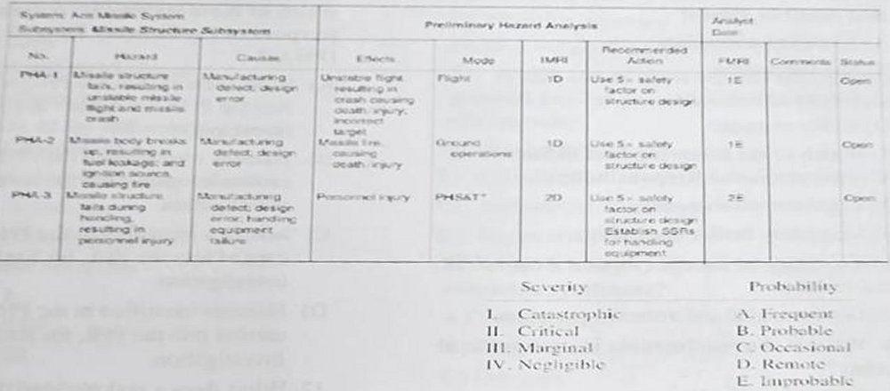

ES 412 OCCUPATIONAL HEALTH AND SAFETY II FINAL EXAM JUNE 2025
This examination is comprised of 25 multiple-choice questions. Each question is followed by four possible answers, of which only one is correct. The maximum time for this examination is 30 minutes.
S20'nin B-D şıkları kâğıtta sağ sütunun başında yer alır.
Optik form talimat tablosu alınmadı.
Bir şıkkı işaretlediğinizde doğru cevap görünür. Seçiminiz bu tarayıcıda saklanır.
0 / 25 cevaplandı
1. System: Arm Missile System; Subsystem: Missile Structure Subsystem — Preliminary Hazard Analysis (tablo). Severity: I. Catastrophic, II. Critical, III. Marginal, IV. Negligible. Probability: A. Frequent, B. Probable, C. Occasional, D. Remote, E. Improbable. Given the information above, which of the following statements would be correct?
No.
Hazard
Cause
Effects
Mode
IMRI
Recommended Action
FMRI
Comments
Status
PHA-1
Missile structure fails, resulting in unstable missile flight and missile crash
Manufacturing defect; design error
Unstable flight resulting in crash causing death, injury, incorrect target
Flight
1D
Use 5× safety factor on structure design
1E
Open
PHA-2
Missile body breaks up, resulting in fuel leakage and ignition source, causing fire
Manufacturing defect; design error
Missile fire causing death, injury
Ground operations
1D
Use 5× safety factor on structure design
1E
Open
PHA-3
Missile structure fails during handling, resulting in personnel injury
Use 5× safety factor on structure design; Establish [okunamadı] for handling equipment
2E
Open

Doğru cevap: C · Çözüm (kaynakta işaret yok, doğrulanmamış) · emin değiliz · FMRI: PHA-1=1E, PHA-2=1E, PHA-3=2E. C kesin doğru (1E = catastrophic/improbable). D de büyük ölçüde doğru okunabilir ('less likely to occur'), bu yüzden belirsiz; kâğıt tablosu bulanık. Tablo metninin bir kısmı (Mode, 'Establish ...') okunamadı; görsel eklendi.
2. What is the most effective way to reduce shift work-related health problems?
Doğru cevap: C · Çözüm (kaynakta işaret yok, doğrulanmamış)
3. Which shift type splits the working hours during the day?
Doğru cevap: C · Çözüm (kaynakta işaret yok, doğrulanmamış)
4. What does ALARP stand for in hazard analysis?
Doğru cevap: B · Çözüm (kaynakta işaret yok, doğrulanmamış)
5. In shift work, which direction of rotation is more adaptable?
Doğru cevap: C · Çözüm (kaynakta işaret yok, doğrulanmamış) · İleri (saat yönünde) rotasyon sirkadiyen ritme daha uygundur.
6. Who is primarily responsible for hazards that result in illness?
Doğru cevap: C · Çözüm (kaynakta işaret yok, doğrulanmamış)
7. Which of the following best defines CSR (Corporate Social Responsibility)?
Doğru cevap: C · Çözüm (kaynakta işaret yok, doğrulanmamış)
8. What is the risk formula in occupational safety?
Doğru cevap: C · Çözüm (kaynakta işaret yok, doğrulanmamış)
9. Which of the following is an ethical concern in engineering?
Doğru cevap: C · Çözüm (kaynakta işaret yok, doğrulanmamış)
10. What is the function of the three-point contact on stairs?
Doğru cevap: B · Çözüm (kaynakta işaret yok, doğrulanmamış)
11. In risk assessment analysis techniques, which of these statements presents the purpose of Preliminary Hazard Analysis (PHA)?
Doğru cevap: B · Çözüm (kaynakta işaret yok, doğrulanmamış) · PHL (Preliminary Hazard List) tehlikeleri PHA'ya taşınır; A şıkkında 'Risks' ifadesi yanlış.
12. What does a stakeholder theory promote in workplace ethics?
Doğru cevap: D · Çözüm (kaynakta işaret yok, doğrulanmamış)
13. What is the purpose of an ethical code of conduct?
Doğru cevap: A · Çözüm (kaynakta işaret yok, doğrulanmamış)
14. What makes stairways safer during emergency exits?
Doğru cevap: B · Çözüm (kaynakta işaret yok, doğrulanmamış)
15. What does the sleep cycle consist of?
Doğru cevap: C · Çözüm (kaynakta işaret yok, doğrulanmamış)
16. Which one of the following(s) is an example of Zeitgebers?
I. Pharmacological manipulation
II. Gene expression
III. Eating/drinking patterns
IV. Hormone Secretion
Doğru cevap: C · Çözüm (kaynakta işaret yok, doğrulanmamış) · emin değiliz · Zeitgeber dış ipucudur (ilaç/melatonin, yeme-içme düzeni); gen ifadesi ve hormon salgısı iç süreçlerdir.
17. What does the term “tinnitus” refer to?
Doğru cevap: B · Çözüm (kaynakta işaret yok, doğrulanmamış)
18. What type of fall occurs from the same walking level?
Doğru cevap: B · Çözüm (kaynakta işaret yok, doğrulanmamış)
19. Which component of indoor air can cause lung cancer after long-term exposure?
Doğru cevap: B · Çözüm (kaynakta işaret yok, doğrulanmamış)
20. What is Raynaud’s syndrome associated with?
Doğru cevap: C · Çözüm (kaynakta işaret yok, doğrulanmamış)
21. Which one of these affords workers the greatest level of protection in the Hierarchy of Controls?
Doğru cevap: A · Çözüm (kaynakta işaret yok, doğrulanmamış)
22. What is a key symptom of hand-arm vibration syndrome?
Doğru cevap: B · Çözüm (kaynakta işaret yok, doğrulanmamış)
23. What does circadian rhythm mean?
Doğru cevap: A · Çözüm (kaynakta işaret yok, doğrulanmamış)
24. What kind of air contaminant is asbestos?
Doğru cevap: C · Çözüm (kaynakta işaret yok, doğrulanmamış)
25. An engine is 25 m away from the worker and emits 100 dB(A) noise. What is the level of noise the worker feels if she goes 100 m away from the engine?
Doğru cevap: D · Çözüm (kaynakta işaret yok, doğrulanmamış) · Mesafe 4 katına çıkınca ters kare yasası ile 20·log10(4) ≈ 12 dB azalır: 100 − 12 = 88 dB.